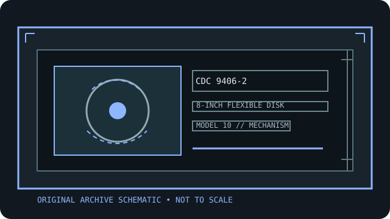

[ INDIVIDUAL COMPONENT // FLOPPY DRIVES ]
Control Data Corporation 9406-2 8-inch DSDD floppy drive
This record identifies a real, model-specific 8-inch diskette mechanism. Format capacity and host fit depend on the documented revision, interface options, controller, recording mode, and media; values are not inferred from form factor alone.

IDENTIFICATION NOTE: CDC 9406-2 is a bare mechanism/drive model, not a generic PC floppy peripheral. Match the full label, PCB revision, connector and voltage configuration to the cited manual before connecting or servicing it.
Model specifications
| Catalog subcategory | 8-inch floppy mechanisms |
|---|---|
| Exact model / family | Control Data Corporation 9406-2 8-inch DSDD floppy drive |
| Disk format and capacity | 8-inch double-sided, double-density diskette. CDC performance tables specify the recording characteristics and format-dependent capacity; use the target host’s exact sector/track layout instead of a generic byte total. |
| Host interface | Host interface includes drive-select, direction/step, read/write, index/sector and status signals. The manual documents host-supplied DC power and model-specific signal connections; do not treat it as a PC 34-pin unit. |
| Data rate | The 9406-2/3 performance table specifies 249,984 bits/s data transfer for its listed recording mode. Confirm the controller’s format and encoding against the exact CDC table before reading or writing. |
| Drive select / jumpers | Drive Select 1–4 and option shunts are covered in the hardware maintenance manual; the interface gates operations by drive select. Set the physical switch/options to match the host address and verify write-protect/ready options. |
| Dimensions / mounting | 9406-2: 4.97 in (126 mm) high × 8.78 in (223 mm) wide × 14.24 in (363 mm) deep; 12 lb (5.44 kg), per the 9406-2/3 maintenance manual. |
| Power requirements | Host DC rails: +24 V (±10%), 1.2 A typical while seeking, and +5 V (±5%), 1.0 A typical. AC source requirements are nameplate-specific; confirm exact chassis and host power configuration before service. |
| Controller / host compatibility | Designed for a compatible CDC host/controller and its double-sided 8-inch format. Match drive-select, timing, rails, format, and interface before operation; the exact 9406 host family’s maintenance manual controls compatibility. |
Model-specific compatibility checks
- Record the complete model suffix, serial/date code, board revision, connector keying, and all drive-select or option links before installation.
- Confirm controller signaling, line termination, host drive-select assignment, recording density, sector geometry, and the manual’s power connector pinout as a single compatible configuration.
- Do not connect by connector shape alone. An 8-inch drive may require non-PC signal conventions, additional DC rails, or a mains-rated supply; follow the model documentation.
Preservation and safety notes
Use an isolated, correctly rated host supply: the +24 V rail and any AC-powered host are hazardous. Disconnect before changing options, inspect both disk surfaces, avoid test writes to original media, and record drive/host revisions with each image.
For archival work, preserve original media in its native format, make a verified read-only acquisition first, checksum retained copies, and log the drive, controller, software, media condition, and any service or conversion performed.
Manufacturer manuals & archive sources
- CDC 9406-2/3 8-inch DSDD Floppy Hardware Maintenance Manual (Internet Archive)Model-specific 9406-2/3 maintenance source for physical dimensions, electrical ratings, interface, and recording data.
- CDC 9406-2/3 Hardware Maintenance Manual scanned PDFDirect archival scan of the cited CDC maintenance manual.
Consult the exact model/revision manual before applying electrical or service values. Family references are useful only where their coverage matches the marked unit.